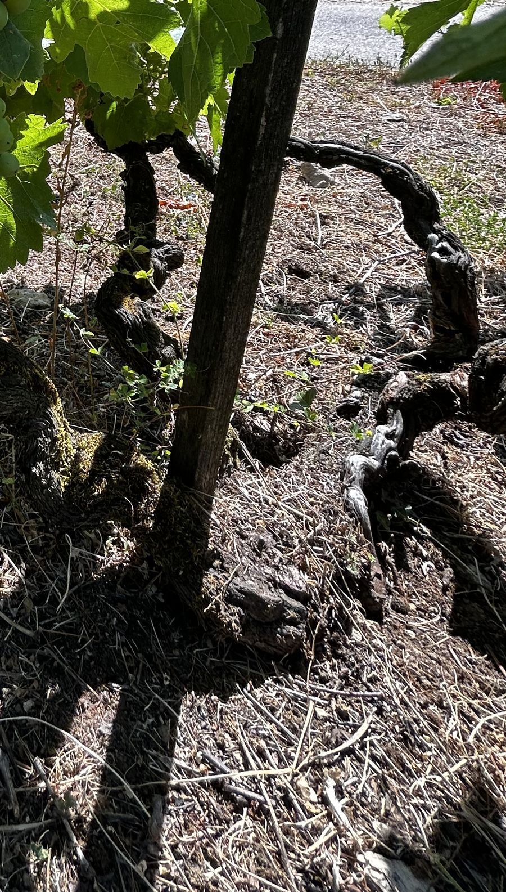

Une histoire de terre et de passion
Un micro-domaine né d'une reconversion, sur les terres foulées depuis l'enfance.
D'une passion à un métier
Passionné par le vin, l'œnologie et la nature, le vigneron décide un jour de reprendre ses études pour se consacrer à la vigne.
Après une formation à la conduite et à la gestion de l'entreprise viti-vinicole, et plusieurs saisons passées dans un domaine réputé du Mâconnais, il crée en 2020 son propre domaine, sur les terres de son enfance.
L'aventure commence modestement : 10 ares de vignes louées à un ancien du village contre quelques bouteilles, et une première vinification dans un garage familial. Depuis, les parcelles se sont ajoutées les unes aux autres.

Vieilles vignesQuelques dates
Le retour sur les bancs de l'école
Début d'une formation viti-vinicole, en parallèle d'un premier métier.
Naissance du domaine
Diplôme en poche, 10 ares de vignes et une première cuvée vinifiée à la maison.
Label « Saveurs de l'Ain »
Les cuvées sont reconnues par ce label qualitatif qui valorise les produits locaux et le respect du terroir.
Une nouvelle cave
Installation de la cave à Saint-Martin-du-Mont, au cœur du vignoble.
Cap sur le bio
1,5 ha de vignes et une certification en agriculture biologique attendue.
Les contreforts du Revermont
Le domaine se situe au nord du Bugey, là où la plaine de la Bresse rencontre les premiers reliefs du Jura. Les vignes y profitent de coteaux bien exposés et de sols argilo-calcaires, ponctués de marnes.
Ce terroir donne naissance à des vins tendus, frais et digestes, qui expriment avec justesse leur origine.
 Revermont, Ain
Revermont, AinLe domaine passe au vert
Amoureux de notre terre, nous tenons à respecter la nature et la biodiversité, en faisant appel au « bon sens paysan ».
Zéro synthèse
Aucun pesticide, aucun désherbant ni produit de traitement de synthèse dans nos vignes.
Agriculture biologique
Le domaine est en conversion vers une certification en agriculture biologique.
Face au climat
Cépages plus résistants à la sécheresse, engrais verts, couverts végétaux : nous préparons la vigne de demain.
Venez nous rendre visite
Dégustation, visite de la cave et vente directe, sur rendez-vous toute l'année.